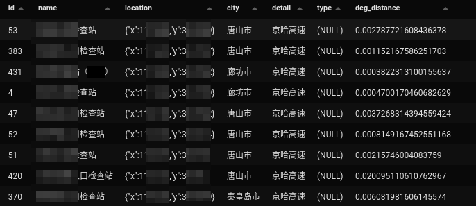

本文所涉及的MySQL经验均以MariaDB 10.5为基础。我上周末在百忙之中重装了Deepin操作系统。因为上一次更新不知道遇到什么问题，系统启动不了。排查原因无果，于是重装最新版Deepin。问题解决。但既然是重装，我以前的软件有一些就没了。其中就包含MySQL数据库。
上次安装的部分过程我在这篇博客中已经提到过了。没错，我还是用的官方脚本。毕竟Deepin是一个软件仓库更新缓慢的distro。我自然不可能因此就安装Deepin仓库里的10.3版本。毕竟10.5是一个大更新。
重装跟第一次安装的大部分步骤都是相同的。需要注意的是要把数据目录重新设定到之前的地方。我设置错了好几回，但是最终设置正确之后，MySQL就正常启动了。
我之前把数据目录放在了/home/mysql/data这个路径里。这没什么。但是我重装系统以后，数据目录的owner就变成我了，应该设置成mysql:mysql才对。总之，这都不是难事。
这次导入csv可是让我费了劲了。如果有navicat的话应该会轻松搞定，但是在咱们清真的Linux下，我自然不可能去装什么盗版的Navicat。虽然有一个DBeaver可以使用，但我之前用它的感受不爽，不想再安装了。这次我选择了一个冷门GUI，叫做Beekeeper Studio，是一款开源软件。但是功能有点简陋，没有方便的直接导入csv。于是我尝试用语句导入。也就是LOAD DATA语句啦。
但是我尝试了很多次都不成功，老是卡在data truncated for column的问题。我想到印象中，我安装的MariaDB的类型验证好像是比MySQL 5.7严一些啊，于是我查了一下，应该是默认的sql_mode影响了这一点
xxxxxxxxxxshow variables like '%sql_mode%';我看了下这个值是多少
xxxxxxxxxxIGNORE_SPACE,STRICT_TRANS_TABLES,ERROR_FOR_DIVISION_BY_ZERO,NO_AUTO_CREATE_USER,NO_ENGINE_SUBSTITUTION
就是这个STRICT_TRANS_TABLES影响了我们。于是通过SET GLOBAL sql_mode把它干掉了。
当然还有其他问题，就是GIS数据类型导入的麻烦之处。
xxxxxxxxxxLOAD DATA INFILE '/home/alexander/coding/map/railway_china.csv'INTO TABLE railway_chinaFIELDS TERMINATED BY ',' OPTIONALLY ENCLOSED BY '"' ESCAPED BY '\\'LINES TERMINATED BY '\r\n'IGNORE 1 LINES(id, name, @var3)SETlocation = GeomFromText(@var3);注意行尾符是什么很重要。如果你是Windows类的换行CRLF，一定不要写成\n，那样会报一个
xxxxxxxxxxRow 1 was truncated; it contained more data than there were input columns
这个错有各种原因都有可能引起，所以你在网上找解决方法，也容易找不对。
我前几周没事就在想这个问题。解决这个问题无非是两个路子：一个是靠人力，一个是靠程序自动比对。本文中我主要想提的是，通过MySQL在库中排查数据中的问题。
第一方面，我想排查数据中重复的情况。尤其是在OSM这种数据集中，出现同一个地方被标了两次的情况还是蛮常见的。在其他的数据中，这类情况其实也是存在。以前，我一直思路都局限在通过名称去匹配，然后检验其他数据，包括地理位置数据。但最近我想要改改思路。我要通过地理位置去聚合，找到距离近的点。如果两个火车站的距离在1000米以内，那这件事是不是会有点奇怪呢？所以我选择了这个距离。而且我发现如果这个距离扩大到2000米以至3000米的时候，这个数据就有可能出错了。
我初步的想法是利用MySQL提供的ST_Distance_Sphere函数，但发现MariaDB目前不支持，要到10.5.10版本之后才会支持。我是这么写的
xxxxxxxxxxSELECT * FROM railway_china t1, railway_china t2WHERE ST_Distance_Sphere(t1.location, t2.location) < 1000 AND t1.id < t2.id但是既然不能用，那我也可以把距离除以111195，来近似比较距离了。
xxxxxxxxxxSELECT * FROM railway_china t1, railway_china t2WHERE ST_Distance(t1.location, t2.location) < 0.009 AND t1.id < t2.id但这两种方案有一个共同的问题，那就是用不上空间索引。为什么用不上索引？很简单，因为ST_Distance类的函数天生就只考虑算出一个距离，没有考虑固定其中一个，来缩小查找的范围。它的两个参数是平等的。而下面这个函数，MBRContains，天生就想着框定一个范围，所以就会用上索引。这也就是为什么我在网上找到MySQL专家写的这个写法。为了适应MBRContains，构造一个类圆的多边形，从而帮助框定范围。
xxxxxxxxxxSELECT * FROM railway_china t1, railway_china t2WHERE t1.id < t2.id ANDMBRContains(polygon_circle(ST_X(t1.location), ST_Y(t1.location), 0.009, 6), t2.location)但这需要编写一个polygon_circle函数。需要比较高超的SQL技术
xxxxxxxxxxCREATE FUNCTION polygon_circle(pX DOUBLE, pY DOUBLE, pDiameter DOUBLE, pPoints SMALLINT UNSIGNED)-- RETURNS VARCHAR(4096) DETERMINISTICRETURNS POLYGON DETERMINISTICBEGIN DECLARE i SMALLINT UNSIGNED DEFAULT 0; DECLARE vSteps SMALLINT UNSIGNED; DECLARE vPolygon VARCHAR(4096) DEFAULT ''; -- Input validation IF pPoints < 3 THEN RETURN NULL; END IF; IF pPoints > 360 THEN RETURN NULL; END IF; IF pPoints > 90 THEN RETURN NULL; END IF; if (360 % pPoints) != 0 THEN RETURN NULL; END IF; -- Start SET vSteps = 360 / pPoints; WHILE i < 360 DO SET vPolygon = CONCAT(vPolygon, (pX + (SIN(i * 2 * PI() / 360) * pDiameter)), ' ', (pY + (COS(i * 2 * PI() / 360) * pDiameter)), ', '); SET i = i + vSteps; END WHILE; -- Add first point again SET vPolygon = CONCAT("POLYGON((", vPolygon, (pX + (SIN(0 * 2 * PI() / 360) * pDiameter)), " ", (pY + (COS(0 * 2 * PI() / 360) * pDiameter)), "))"); -- RETURN vPolygon; RETURN ST_GeomFromText(vPolygon);END;行政区划的边界数据属于很容易拿到的公开数据之一，也是我们判断一个经纬度是否正确的一个基础手段。我这里展示其中一种手段给大家看，就是用现成的高德数据。高德提供了行政区划边界的接口，我们可以从DataV那里拿到数据。那我们写一段小JS来处理我们的数据吧。我提前下载好了河北省各个地市的内部区县数据，使用Deno脚本处理一下
xxxxxxxxxximport gcoord from './gcoord/index.ts'for (let n = 1; n < 12; n++) { let fileName = `13${String(n).padStart(2, '0')}00.json`; const text = await Deno.readTextFile('gaode_data/' + fileName); const geojson = JSON.parse(text); gcoord.transform(geojson, gcoord.GCJ02, gcoord.WGS84); Deno.writeTextFile(fileName, JSON.stringify(geojson));}我这次用了一个公开的库gcoord来处理高德的边界数据，因为它的介绍中说支持GeoJSON格式的转换。然后我们要做的就是入库，把这些GeoJSON导入到我们的MySQL数据库。1 然后我们随手写段Lua脚本就能导入数据库了。
xxxxxxxxxxlocal json = require('cjson')local fs = require('fs')local mysql = require('mysql')mysql.bind('mariadb')local conn = mysql.connect('localhost', 'root', 'password', 'demo', 'utf8mb4')local new_features = {}local function wrap_value(a) if a then return '"' .. a .. '"' else return 'NULL' endendlocal function get_geojson(geom) return '{"type":"' .. geom.type .. '","coordinates":' .. json.encode(geom.coordinates) .. '}'endfor name, d in fs.dir() do if d:attr'type' == 'file' and name:match('[.]json$') then io.input(name) local geojson = json.decode(io.read('*all')) for i, v in ipairs(geojson.features) do if v.geometry.type ~= 'Point' then conn:query([[INSERT INTO county_boundary (name, adcode, geom) VALUES (]] .. wrap_value(v.properties['name']) .. ',' .. wrap_value(v.properties['adcode']) .. ',' .. [[ST_GeomFromGeoJSON(']] .. get_geojson(v.geometry) .. [[')]] .. [[)]]) end end endend是不是很容易呢？记得给geom这个字段加上空间索引（先设置为非空，不然无法设置空间索引）
xxxxxxxxxxALTER TABLE county_boundary MODIFY `geom` geometry NOT NULL;ALTER TABLE county_boundary ADD SPATIAL INDEX(geom);好的来看看我们用来验证的数据（部分）
| id | name | location |
|---|---|---|
| 576 | 北戴河火车站 | {"x":119.426578,"y":39.856995} |
| 577 | 石家庄火车站 | {"x":114.495968,"y":38.048038} |
| 578 | 邯郸火车站 | {"x":114.482702,"y":36.609316} |
| 579 | 沧州火车站 | {"x":116.884334,"y":38.315644} |
| 580 | 衡水火车站 | {"x":115.697478,"y":37.74999} |
| 581 | 邢台火车站 | {"x":114.498746,"y":37.075952} |
| 582 | 保定火车站 | {"x":115.487222,"y":38.868748} |
| 583 | 昌黎火车站 | {"x":119.174245,"y":39.710207} |
| 584 | 任丘火车站 | {"x":116.151497,"y":38.700304} |
我们现在与之前建立好的区划边界表进行关联
xxxxxxxxxxSELECT t1.*, t2.name, t2.adcode FROM railway_hb_test t1 JOIN county_boundary t2ON ST_Contains(t2.geom, t1.location)我们看到结果秒出。得到的结果符合我们的预期
| id | name | location | name | adcode |
|---|---|---|---|---|
| 575 | 唐山火车站 | {"x":118.125417,"y":39.631415} | 路北区 | 130203 |
| 576 | 北戴河火车站 | {"x":119.426578,"y":39.856995} | 北戴河区 | 130304 |
| 577 | 石家庄火车站 | {"x":114.495968,"y":38.048038} | 长安区 | 130102 |
| 578 | 邯郸火车站 | {"x":114.482702,"y":36.609316} | 丛台区 | 130403 |
| 579 | 沧州火车站 | {"x":116.884334,"y":38.315644} | 新华区 | 130902 |
| 580 | 衡水火车站 | {"x":115.697478,"y":37.74999} | 桃城区 | 131102 |
| 581 | 邢台火车站 | {"x":114.498746,"y":37.075952} | 襄都区 | 130502 |
| 582 | 保定火车站 | {"x":115.487222,"y":38.868748} | 莲池区 | 130606 |
| 583 | 昌黎火车站 | {"x":119.174245,"y":39.710207} | 昌黎县 | 130322 |
| 584 | 任丘火车站 | {"x":116.151497,"y":38.700304} | 任丘市 | 130982 |
这次我主要介绍了MySQL中处理地理坐标数据的一些经验。GIS功能是现代数据库中非常有用的一项功能，常见的数据库一般都会有这方面功能，只不过大家可能没有学到或者用到。我这边算是把这方面知识简单的给大家展现一下，也只是冰山一角。

事实上我也尝试了其他不同的方法，就比如用高速公路来分析沿线的GA检查站的数据的准确性，由于数据中还额外包含道路信息，我们还可以分析经纬度距离道路的距离（如上图），我就不展开讲了。方法都一样，大家可以尝试一下自己工作中用到的数据，看看是否能够利用GIS分析，发现更多可能性。∎